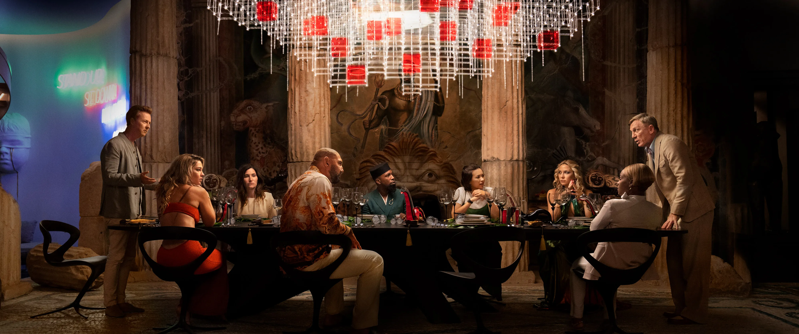
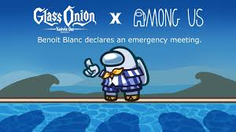

The movie "Glass Onion" is a mystery film written and directed by Rian Johnson. This is a journey into the unknown, where the characters uncover hidden truths and secrets as they peel back the layers of their reality.
It hints at a suspenseful and thought-provoking storyline, inviting viewers into the depths of the film's narrative. The word glass in the title also might refer
to "something hidden in plain sight.This movie has characters who represent important people in various parts of today's world, often called 'disruptors." This movie also reminds me of the
book called "And Then There Were None"
The use of camera angles,framing can make a visually stunning scene.The guys who are responsible for this are the cinematographers, they use techniques like lighting,depth of field to improve the aesthetics of the film.
The choice of colours in the movie significantly impacts the visuals.
The art direction was very nice and every scene is compelling and consistent with film's overall aesthetic
Techniques like thirds,and symmetry were used in the film to make it look more appealing
The unique locations chosen added visual attractiveness to the movie
7 reasons why you should watch this film!!
If you liked the prequel (knives out) then you should definitely watch this
Unique story telling : This movie approaches the murder mystery genre in a fresh way and the narrative stands out from the typical crime dramas
Quirkiness : The film's quirkiness adds humor to the murder mystery, which keeps you intrigued and making you smile at the same time
Significance of the remarkable characters : The characters in the film are eccentric and this adds uncertainty to the story
Visually splendid : The locations that they shot this film in were certainly beautiful!

Plot twists : The surprising turn of events keep you guessing until the very end.
And Ofcourse The great detective Benoit blanc is gonna solve this! What more do you want for you to watch this film?!!
Some memorable quotes
"I'm Very Bad At Dumb Things." - Benoit Blanc
"I Am Not Batman." - Benoit Blanc
“Can we just take a second and fully inbreathiate this moment?” - Miles Bron (and inbreathiate is not an actual word, you have to watch the movie for the reference)
"You Will Forever Be Remembered In The Same Breath As The Mona Lisa." - Helen Brand
Alternative plot lol :
In a spaceship moving through the cosmos, detective benoit blanc finds himself entangled in a deadly game of Among Us. A routine journey takes a scary
turn when a crew member is found dead, and suspicion runs rapidly among the remaining players. Benoit blanc must use his intellect and deducing skills
to reveal the imposter before they kill again, all while figuring out the secret mix of secrets and lies in this high-stakes whodunit. As tensions escalate
and trust wears down, Blanc needs to race against time to reveal the killer's true identity before the spaceship's final destination becomes a grave for all :(

Already watched it?
On a scale from 'Meh' to 'Mind-Blown,' how would you rate the movie?
Feel free to share your thoughts about the film over here